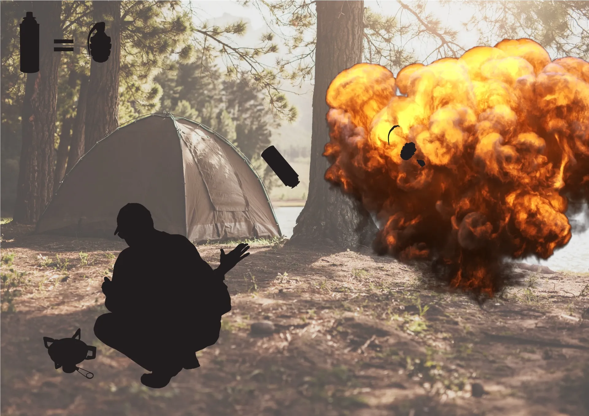
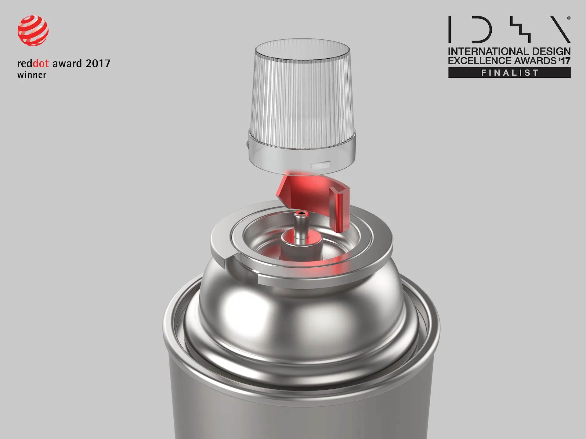
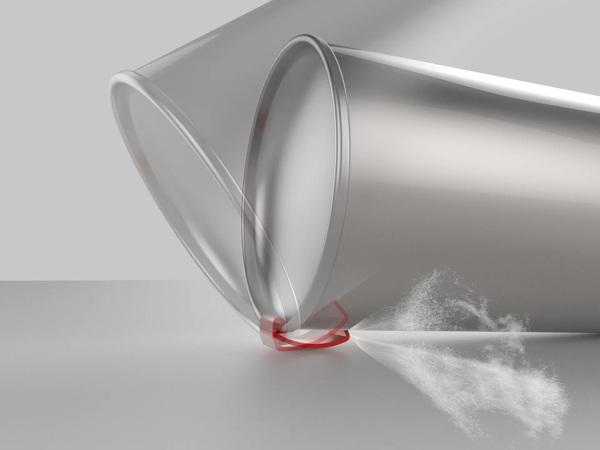
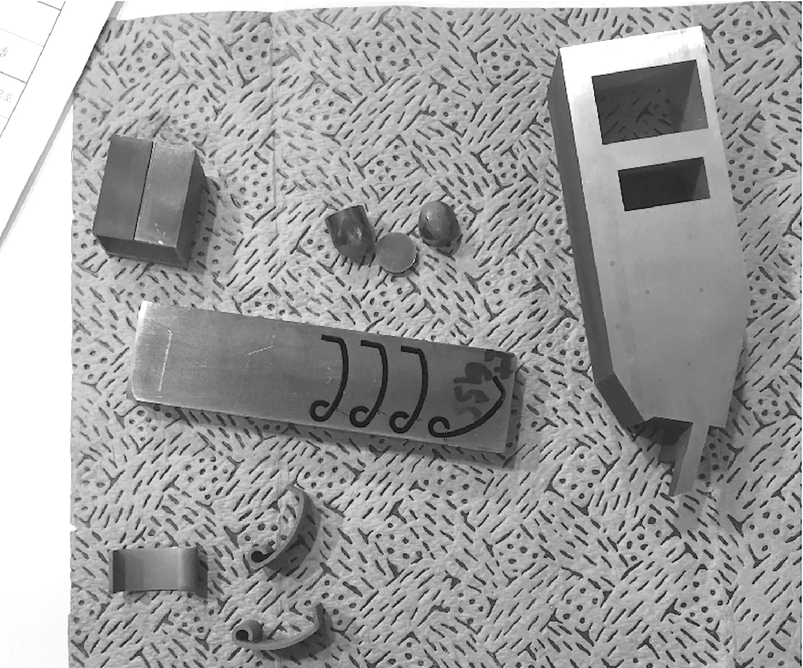
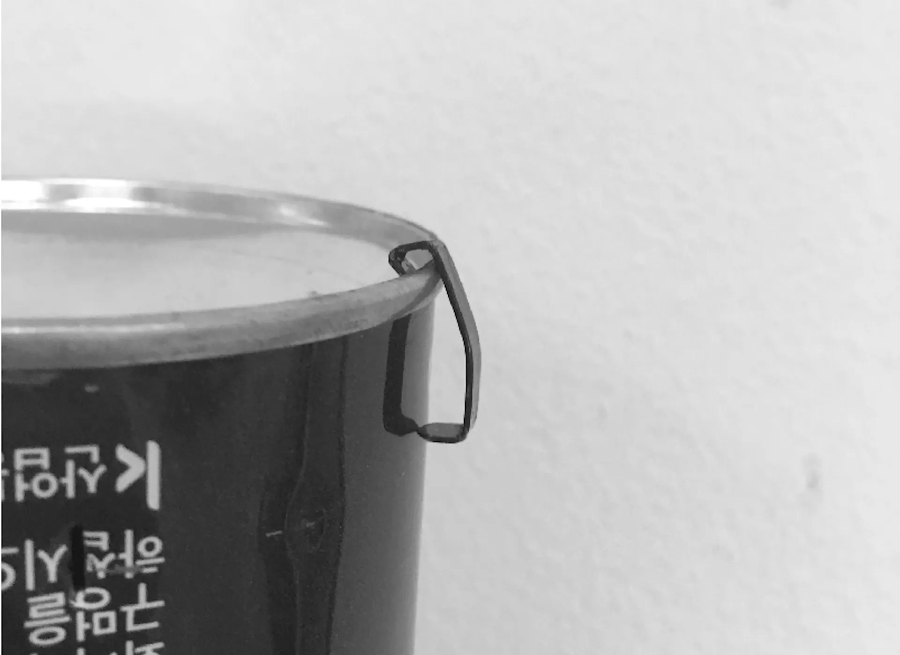
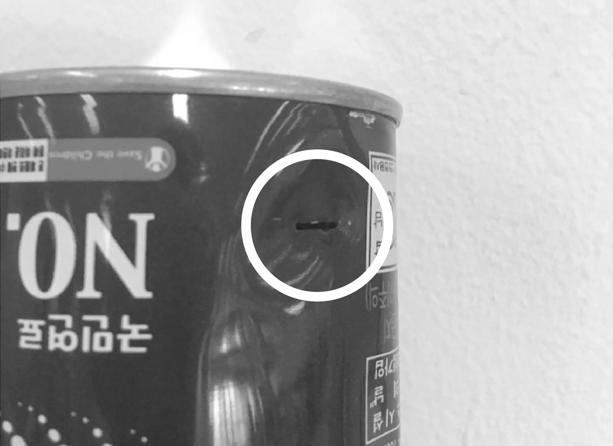

Butane Canister Recycling Tool
Butane gas canisters are one of the most common types of gas containers, but recycling them can be a hassle at best, and downright dangerous at its worst.
The process begins by puncturing a hole in the can to release pressure and leftover gas so that the metal can be easily scrapped.
Most people usually have to carry an extra implement to do so, but this minor inconvenience can be enough to put people off.
This tool proposes adding a built-in metal clip to butane cans that cost very little to produce and are very simple to use knocked against a flat surface, the clip punctures the can.





